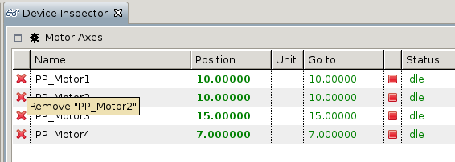
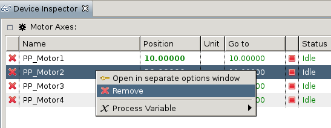
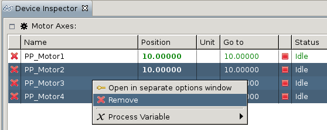

This feature is available in both perspectives (EveDevice and EveEngine). There are multiple ways of removing devices from Device Inspectors.
Each device in the device inspector has an icon representing a red X in its first column. By clicking on it the device will be removed:

A device can also be removed via context menu. After selecting the item open the context menu by clicking the right mouse button. An entry „Remove” will appear:

Removing via context menu also allows to remove multiple devices at once. To do this select the corresponding devices (with Ctrl-Click) and select „Remove” in the context menu:
